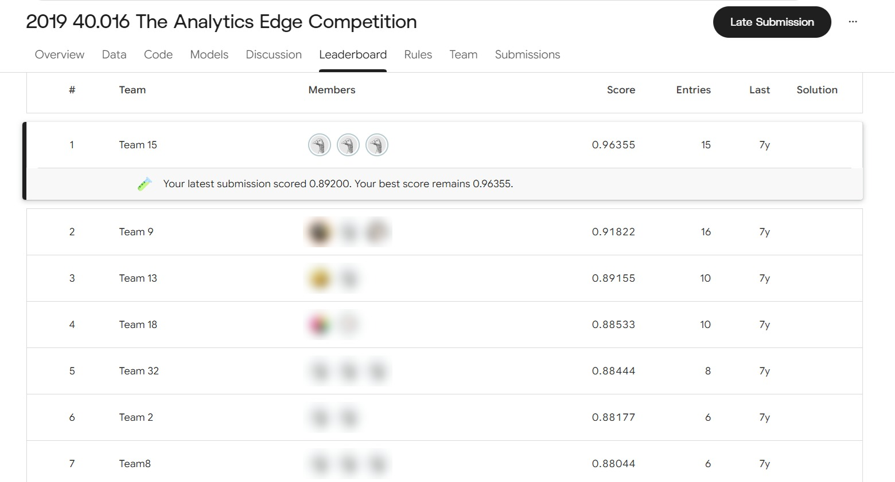
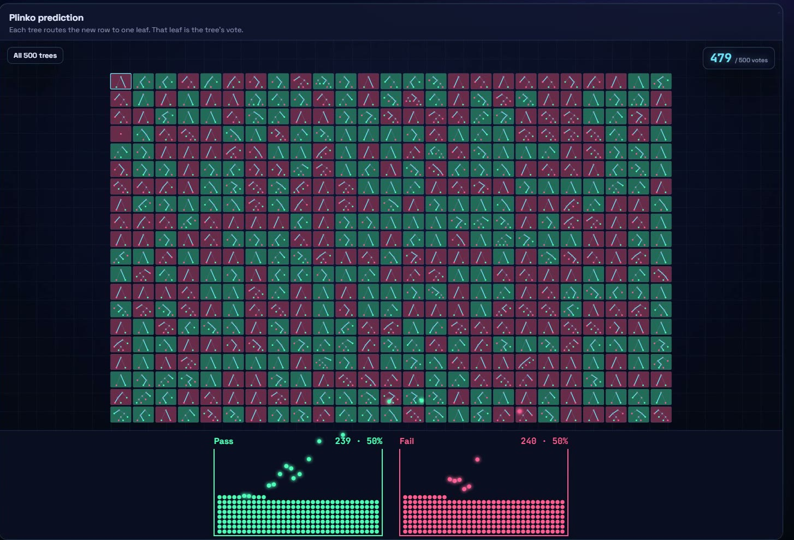

MY TEAM'S R CODE
Knowing how to call it was enough to win. Not enough to teach it.
2019 · READ
Algorithm. Main steps:
m = √p
2026 · DO

3 cohorts · ~70 students
LIVE DEMO
ml-explainers.sutdpm.workers.dev
Try it on your phone.
“start with a dataframe with 10 rows, 5 variables, 1 response variable. clicking a leaf will show 2 random variables to split on”
“add sound for the plinko. it is very satisfying.”
“the bar is the random forest page.”
“use the default parameters (similar to random forest … in R)”
“adversarial review on ml explainers files.”122 of 400 XGBoost predictions were off. Now within 0.0002.
When something looks wrong, ask before it edits: “reason it out before making any changes”
NEVER use ellipses.
Your reply will be read aloud by a text-to-speech engine, so never use ellipses; it cannot pronounce them.
… then spawn a subagent that counts the ellipses and reports the number.
Write the hook's message as an instruction: what to fix, and how to confirm.
“Is there personal data in it?”
Not on the public web? Keep it out of the prompt.
So keep student records outside the folder Claude works in.
Let AI be your vehicle, not your hover chair.
>